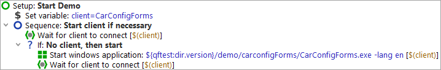

| Version 6.0.3 |
Our first step is to examine the "Setup" node:
|
|  |
||
|
| Figure 19.3: The Setup Node | ||
In the "Setup" node you'll see two child Sequence nodes:
Let's also have a brief look inside the Sequence: Start client if necessary:
|
|  | ||
|
| Figure 19.4: The Sequence to start the SUT | ||
First you see a "Wait for client" node to double-check whether the client is already running. Only if it is not, it will be started.
The Start Windows client node starts the application (SUT) and sets up a link
between qftest and the SUT. In order to be independent of the actual installation we use
a relative path, starting from the QF-Test version directory, contained in the QF-Test
variable ${qftest:dir.version} (see manual chapter Variables).
At this point, we're ready to actually start the SUT:
During execution QF-Test marks the active step by use of an arrow pointer ->.
When the setup sequence is completed, our demo application "CarConfiguratorNet Form" is going to appear on the screen. As QF-Test gets back the focus after the replay action, thus being raised to the foreground, the demo application might be hiding behind it.
|
|  |
||
|
| Figure 19.5: The Windows CarConfigurator Demo | ||
| Last update: 9/6/2022 Copyright © 2002-2022 Quality First Software GmbH |